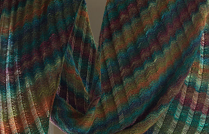
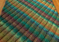

|
||
Premium Patterns Wintry Mix Mitts Love Bytes HawkeyeFree Patterns Kiddie Cadet Summerlin Ruffled Scarf Seamless DS Sock Simply Seamless Pouch Myriads of MushroomsExtras DIY Mitten Blocker Felt Patch Tutorial Yarn Dyeing Tutorial Needle Pouches Knitting Journal |
June 11, 2007 - Posted by Grace SchneblyC'est Finis Project Specs I wish I wouldn’t have waited a week to block this bad boy because I absolutely love it! I swear it wasn’t just laziness that was keeping me from finishing it up; I was waiting for my Kookaburra Woolwash to arrive from Knit Picks, but it was just taking so too long so I went out and bought a tiny bottle of Eucalan Lavender. I love the smell of that stuff! This was my first time washing a garment with woolwash. I usually use plain old dish soap, but that requires some rinsing and I am always paranoid of felting. I think that woolwash was definitely worth the investment, and it helped soften my Clapotis and left it smelling great! Like Alice I didn’t pin it out as I blocked it. I just laid it out in the general shape I wanted and left it to dry. Everyone who told me that it would become flat after blocking was right, but I really like it this way! I liked it before blocking too though when it was curly, but now the dropped stitches are much more visible and the drape is wonderful! When I wear it there is still some curliness at the bottom edges. It really feels light and airy but is also super warm. I am in love!! The knitting was really fun too! I thought that the Clapotis pattern was going to get too repetitive and I would lose interest, but I was actually really excited to knit the whole way through. I don’t know if was the dropped stitches or the beautiful Noro Silk Garden, but I think this is one of my most favorite knits. I decided at the start that I was going to try to match the stripes so they always repeated in the same order, and it was surprisingly easy to do. I think 6 of the 8 balls transitioned directly into each other, and the other two I had to cut out only one color section. However now I have several tiny, single colored balls laying around. I am sure I will find a way to use them though! If I make another Clapotis from Silk Garden (and by if I mean when) I don’t think that I will try to match stripes. I think the ones that are randomly put together are just as beautiful, and it would save some yarn and extra work. I am really happy with my yarn choice, there was some vegetable matter, but I was easily able to pick it out as I came to it. I have heard that people think it is too scratch, but I don’t think that it is a big problem and I feel comfortable wearing it around my neck. I got a chance to wear it around my apartment a few days ago, while it was cold and rainy here, and it is very warm and fun to wear. I ended up completing 6 extra repeats in the straight section of the pattern. It is really long but I love it that way! I don’t know if the skeins of Silk Garden that I got had extra yardage in them but for some reason I really only used 7 skeins worth of yarn. I think that 7 skeins is usually exactly how much you need to complete the normal amount of repeats. I knit into the 8th skein, but that is mainly because it required a little extra yarn to match the stripes. It is really strange that Alice got shorted yarn and I got extra, but I won’t complain. After blocking my Clapotis ended up being 71” long and 18” wide. I guess it is a little thinner than the dimensions given in the pattern, so maybe that is why it ended up a bit longer? I would highly recommend twisting both of the stitches next to the dropped stitch, on both the purl and knit sides. I think that it makes it look so clean and neat. I don’t think that there is any need to mirror the twists though. Dropping the stitch was my favorite part of making my Clapotis, and I don’t think I have used my seam ripper so much (at least not since sewing for 4-H). It is seriously a must have tool for dropping the stitches. I also found it was a lot easier to drop the stitches with the purl side facing. I know that I will make another Clapotis in the future, probably even this year! It was really fun and satisfying. Before I started I was intimidated, maybe because so many people had made one and I just didn’t want to screw it up, but I found out that it wasn’t difficult at all. This is a really satisfying beginner project that can made from so many different yarns to create a beautiful variety of looks. I will definitely make another one out of Silk Garden, but I also want to try out other yarns like Brooks Farm Four Play or Lorna’s Laces Lion & Lamb. |
   Recent ReviewsRecent Posts
 Our Favorites
|
| © 2007 KathrynIvy.com | ||
{kind=link}
{kind=link}
{kind=link}